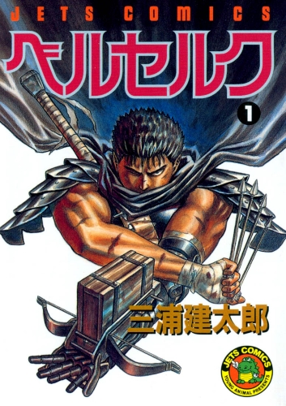

Aclamada série de mangá de fantasia sombria (dark fantasy) criada por Kentaro Miura

Berserk é uma aclamada série de mangá japonês do gênero fantasia sombria, escrita e desenhada por Kentaro Miura.
A história se passa em um mundo fantasioso semelhante à Europa medieval, combinando diversos elementos fantásticos, como monstros, elfos e objetos mágicos.
Acompanhamos as incursões do protagonista Guts em sua jornada resiliente em meio ao sofrimento.
Berserk, por fim, ensina que, quanto mais difíceis as coisas se tornam, elas podem piorar — mas é preciso ter garra e muita coragem para seguir em frente.
"Sonhos… Todo homem tem sonhos… Todo homem deseja perseguir seu sonho. Isso tortura ele, mas o sonho da sentido à vida dele."
"Eu nunca esperei por um milagre, farei as coisas acontecerem eu mesmo." - Guts
"Se você não luta pela sua vida, então você não merece vivê-la" - Guts
Torne-se mais um fã de Berserk e adquira o mangá oficial da Panini.